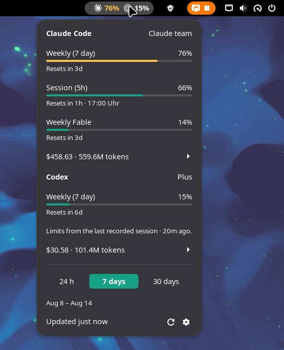

A GNOME Shell extension for Claude Code and OpenAI Codex that answers both questions from the top panel: how much of your limits is left, and where the spend actually went — what the same traffic would have cost at API rates, broken down per model, per skill, per subagent and per MCP tool.
Every other panel extension in this space stops at the first question. This one is for when “73% used” is not the thing you wanted to know.
Works with Claude Code alone, Codex alone, or both. Everything is read from the session files already on your machine; nothing is sent anywhere. Tested on GNOME 49 and 50, Wayland and X11, Arch/Manjaro, Fedora and Ubuntu.

/usage reports
inside Claude Code.Needs GNOME Shell 49 or 50. Download the zip from the latest release, then:
gnome-extensions install --force claudex-usage@thesalaty.github.io.shell-extension.zipLog out and back in — Wayland cannot reload the shell in place — and enable it:
gnome-extensions enable claudex-usage@thesalaty.github.ioThere are a dozen of these now, so here is an honest table. Feature sets are from each project's own README, checked in August 2026.
| Claude | Codex | Limits | Cost at API rates | Per model / skill | GNOME | |
|---|---|---|---|---|---|---|
| Claudex Usage | yes | yes | yes | yes | yes | 49–50 |
| Brain Usage | yes | yes | yes | — | — | 45–49 |
| AI Usage Bar | yes | yes | yes | — | — | 50 |
| Claude + Codex Usage | yes | yes | yes | — | — | 48–50 |
| Claude Monitor | yes | yes | yes | — | — | 45–49 |
| AI Token Bars | yes | yes | yes | — | — | 42 |
| claude-monitor | yes | — | yes | cost + burn rate | — | 48 |
Where the others are ahead, so you can pick properly: AI Usage Bar covers four more vendors (Z.AI, OpenRouter, DeepSeek, Kimi). Brain Usage ships a KDE Plasma version and low-quota notifications. Claude Monitor has a macOS menu-bar app. If limits are all you need and you are on GNOME 45–48, those are the better fit — this one starts at 49.
What is here and nowhere else is the second half of the question: cost at API list prices for the last 24h / 7d / 30d, what prompt caching saved, and the split across models, skills, subagents and MCP tools. No helper CLI, no daemon — it reads the session files directly.